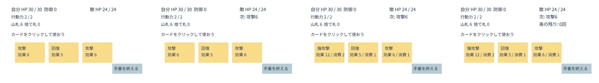
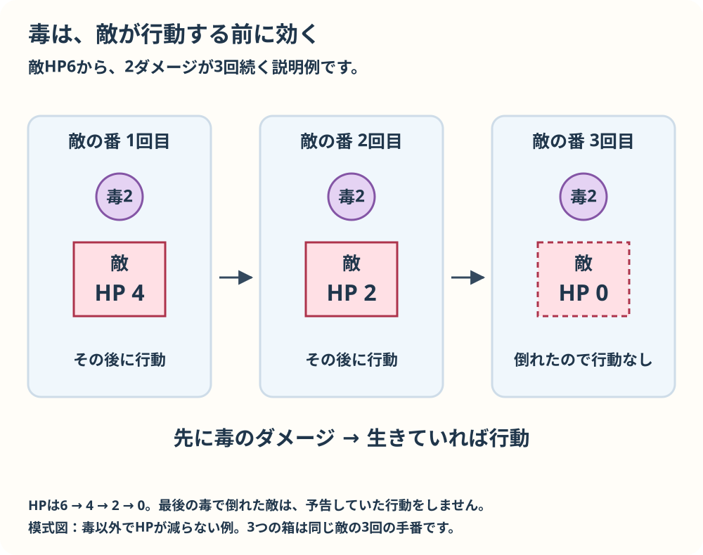

小さなカードバトルの発展
基本の完成版から3つの機能を順番に追加します。
始める前に
基本編の完成版から始めます。ZIPを展開してできたフォルダーでindex.htmlを開きます。ZIPには基本編の3ファイルが入っています。
WindowsでZIPを展開する（動画）
自分で作った基本版でも同じ内容なら使えます。
各段階の変更を上から順に作業用の script.js に加えます。変更前と同じ範囲を探して、変更後のコードに置き換えてください。保存したら index.html を開くか、再読み込みします。
ステップ 1：敵の次の行動を予告する
このステップの見本を図で見る
30 - 6 = 24; intent = "defend"
次は防御4
enemy.block += 4; intent = "attack"
次は攻撃6
ゲーム画面とコードの前後を見る

このステップの見本
player.takeDamage(6);
変わったコードの一例（script.js）if (intent === "attack") player.takeDamage(6);
見本で確かめること
敵の予告が攻撃6から防御4へ変わり、次の手番ではその通りに行動します。
目標
敵が次に攻撃するか防御するかを先に表示します。
小作業を順に進め、確認欄で保存して動きを確かめます。
敵の次の行動を覚える
script.js で次の範囲を探して置き換えます。
置き換える範囲
let player, enemy, hand, deck, discard, action, state, message;置き換えるコード
let player, enemy, hand, deck, discard, action, state, message, intent;intent は敵が次に攻撃するか防御するかを覚えます。
最初は攻撃を予告する
script.js で次の範囲を探して置き換えます。
置き換える範囲
drawCards();
action = 2;
state = "playing";置き換えるコード
drawCards();
action = 2;
intent = "attack";
state = "playing";開始時の予告は攻撃にします。手札を引き、行動力とプレイ中の状態を設定する行も残します。
敵の行動を表示する
script.js で次の目印の直後に追加します。
目印
ctx.fillText("敵 HP " + enemy.hp + " / " + enemy.maxHp, 480, 60);追加するコード
ctx.fillText(intent === "attack" ? "次: 攻撃6" : "次: 防御4", 480, 100);intent が攻撃なら「次: 攻撃6」、それ以外は「次: 防御4」を表示します。
予告した行動を実行する
script.js で次の範囲を探して置き換えます。
置き換える範囲
player.takeDamage(6);置き換えるコード
if (intent === "attack") player.takeDamage(6);
else enemy.block += 4;攻撃なら自分が6のダメージを受け、防御なら敵の block が4増えます。
次の行動を切り替える
script.js で次の目印の直後に追加します。
目印
if (player.hp <= 0) {
state = "over";
message = "負けてしまった";
return;
}追加するコード
intent = intent === "attack" ? "defend" : "attack";攻撃の次は防御、防御の次は攻撃にします。
手番の案内を変える
script.js で次の範囲を探して置き換えます。
置き換える範囲
message = "敵の攻撃6。次の手番です";置き換えるコード
message = "次の手番です";敵の行動が攻撃とは限らないため、次の手番を案内します。
保存後の確認
保存してゲーム画面を更新する（動画）
index.html を再読み込みします。敵の予告が攻撃6から防御4へ変わり、次の手番ではその通りに行動します。 この段階の見本を開く
小さな練習
最初の予告を防御に変え、敵の行動を比べます。 練習後はコードを元に戻してください。
ステップ 2：行動力2の強いカード
このステップの見本を図で見る
2 >= 2; 24 - 12 = 12; 2 - 2 = 0
強攻撃を使える
1 < 2 → return
カードも敵HPも変わらない
ゲーム画面とコードの前後を見る
このステップの見本
deck.push(new Card("attack", "攻撃", 6));
変わったコードの一例（script.js）if (i === 0) deck.push(new Card("attack", "強攻撃", 12, 2));
見本で確かめること
強攻撃は行動力2を使って12ダメージを与えます。
目標
行動力を2使う強攻撃カードを加えます。
小作業を順に進め、確認欄で保存して動きを確かめます。
カードの消費を受け取る
script.js で次の範囲を探して置き換えます。
置き換える範囲
constructor(kind, label, amount) {置き換えるコード
constructor(kind, label, amount, cost = 1) {cost = 1 は4番目の値を省いたときの初期値です。
カードごとに消費を保存する
script.js で次の目印の直後に追加します。
目印
this.amount = amount;追加するコード
this.cost = cost;this.cost にそのカード自身の行動力の消費を入れます。
効果と消費を表示する
script.js で次の範囲を探して置き換えます。
置き換える範囲
ctx.fillText("効果 " + this.amount, x + 15, y + 75);置き換えるコード
ctx.fillText("効果 " + this.amount + " / 消費 " + this.cost, x + 8, y + 75);カードの効果と消費を一緒に表示します。
強攻撃を1枚加える
script.js で次の範囲を探して置き換えます。
置き換える範囲
deck.push(new Card("attack", "攻撃", 6));置き換えるコード
if (i === 0) deck.push(new Card("attack", "強攻撃", 12, 2));
else deck.push(new Card("attack", "攻撃", 6));最初の1回は効果12・消費2の強攻撃、残り2回は通常の攻撃です。山札の合計は9枚のままです。
消費より行動力が少ないかを調べる
script.js で次の範囲を探して置き換えます。
置き換える範囲
if (action <= 0) {置き換えるコード
if (action < hand[i].cost) {選んだカードの消費より行動力が少なければ使わずに終えます。
カードの消費分を引く
script.js で次の範囲を探して置き換えます。
置き換える範囲
action--;置き換えるコード
action -= card.cost;-= は右の値を引いて戻します。行動力2で強攻撃を使うと残り0です。
保存後の確認
強攻撃は行動力2を使って12ダメージを与えます。行動力1では使えません。 この段階の見本を開く
小さな練習
強攻撃の12を10に変えて、必要な攻撃回数を比べます。 練習後はコードを元に戻してください。
ステップ 3：毒の継続効果を加える
このステップの見本を図で見る
24 - 2 = 22; 3 - 1 = 2
あと2回
22 - 2 = 20; 2 - 1 = 1
あと1回
20 - 2 = 18; 1 - 1 = 0
毒が終了
ゲーム画面とコードの前後を見る
このステップの見本
deck.push(new Card("defend", "防御", 4));
変わったコードの一例（script.js）if (i === 0) deck.push(new Card("poison", "毒", 2));
見本で確かめること
毒を使うと敵の手番開始時に2ずつ減り、3回で効果が終わります。
目標
毒カードを使うと、敵の手番ごとにダメージを与えます。
小作業を順に進め、確認欄で保存して動きを確かめます。
毒の残り回数を覚える
script.js で次の目印の直後に追加します。
目印
this.block = 0;追加するコード
this.poisonTurns = 0;poisonTurns は毒が続く回数で、最初は0です。
毒カードを1枚加える
script.js で次の範囲を探して置き換えます。
置き換える範囲
deck.push(new Card("defend", "防御", 4));置き換えるコード
if (i === 0) deck.push(new Card("poison", "毒", 2));
else deck.push(new Card("defend", "防御", 4));最初の防御カードを毒にし、残り2枚は防御です。山札の合計は9枚のままです。
毒の残り回数を表示する
script.js で次の目印の直後に追加します。
目印
ctx.fillText(intent === "attack" ? "次: 攻撃6" : "次: 防御4", 480, 100);追加するコード
ctx.fillText("毒の残り: " + enemy.poisonTurns + "回", 480, 140);敵の毒があと何回続くか表示します。
毒カードで3回に設定する
script.js で次の目印の直後に追加します。
目印
else if (card.kind === "heal") player.heal(card.amount);追加するコード
else if (card.kind === "poison") enemy.poisonTurns = 3;毒を使うと残り3回にします。重ねて使っても回数を足さず3に戻します。
敵の行動前に毒を処理する
script.js で次の目印の直後に追加します。
目印
while (hand.length > 0) discard.push(hand.pop());追加するコード
if (enemy.poisonTurns > 0) {
enemy.hp = Math.max(0, enemy.hp - 2);
enemy.poisonTurns--;
if (enemy.hp === 0) {
state = "clear";
message = "毒で勝利！ 敵は行動しない";
return;
}
}毒が残っていれば敵HPを2減らし、回数を1減らします。takeDamage() を通さないので敵の防御は使われません。HPが0になれば勝利し、return で敵の行動を行いません。

毒は敵の手番が始まるときに、先に2ダメージを与えます。敵HP6で他の影響がなければ、3回の手番で6→4→2→0となります。毒でHPが0になった敵は、その後の行動をしません。
毒以外で敵のHPが減らない説明例です。実コードの毒は防御を経由せず、直接HPを2減らします。3つの箱は同じ敵の3回の手番で、毒の後に生存を確認する順序を示しています。
保存後の確認
毒を使うと敵の手番開始時に2ずつ減り、3回で効果が終わります。 この段階の見本を開く
小さな練習
毒の回数3を2に変え、敵のHPの減り方を比べます。 練習後はコードを元に戻してください。